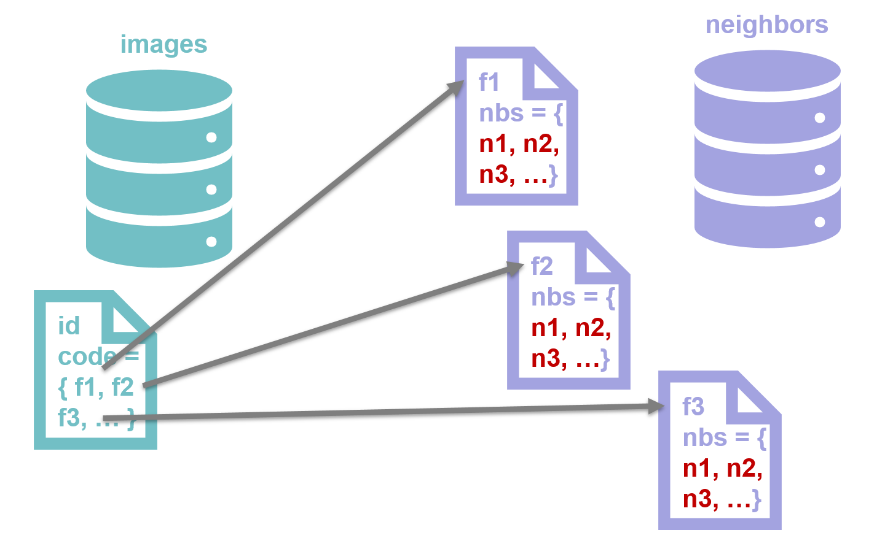

Approach
Deep hashing based (image) similarity search in ElasticSearch
Uses multi index hashing
Seamless integration into ES by terms queries and neighbors index
Advantages:
Low search latencies: short hash codes for filtering (64 bit)
High retrieval quality: long hash codes for re-ranking (256 bit)
See https://arxiv.org/abs/2305.04710 and https://github.com/umr-ds/ElasticHash for more details.
Multi-Index Hashing (MIH)
The approach is based on Multi-index hashing. The idea of MIH is based on the following observation: for two binary codes \(h=(h^1,...,h^m)\) and \(g=(g^1,...,g^m)\) where \(m\) is the number of partitions, \(h^k\) and \(g^k\) are the \(k^{th}\) subcodes and \(H\) is the Hamming norm, the following proposition holds:
For the case of 64-bit codes that are decomposed into \(m=4\) subcodes, this means that a code is in a Hamming radius \(r < 12\) if at least one of the subcodes has a distance of \(d \leq \lfloor \frac{r}{m} \rfloor = 2\) from the query subcode.
The performance of MIH can be increased if the subcodes are maximally independent of each other, especially for shorter codes.
Thus, after training a deep hashing model, the bit positions should be permutated accordingly (see decorrelate()).
Two-stage Approach
Filtering (64 bit codes):
Find all 64 bit codes with distance < 12
Select 64 most important bits from 256 bit codes
Apply Multi-Index Hashing:
Partition 64 bit codes into \(m=4\) subcodes
Within Hamming radius \(r=11\) at least one of the subcodes has distance \(d \leq \lfloor \frac{e}{m} \rfloor = 2\)
Searching subcode radii \(d=2\) much faster (ES inverted index)
Re-Ranking (256 bit codes):
More accurate
Hamming distance computation only on small subset
Indices
Documents in the retrieval index (e.g. images) are referenced to all \(d=2\) neighbors of their subcodes.
Queries
Painless Script for Hamming distance
Script for computing Hamming distance on 4 long int values:
# POST _scripts/hd64
{
"script":
{
"lang": "painless",
"source":
64-Long.bitCount(params.subcodeˆdoc[params.field].value)
}
}
Images Index
Short codes (f0... f3) are for filtering, long codes (r0... r3) for re-ranking.
# PUT /es-retrieval
# PUT /es-retrieval/default/_mapping
{
"properties": {
"image": {"type": "text"},
"f0": {"type": "keyword"},
"f1": {"type": "keyword"},
"f2": {"type": "keyword"},
"f3": {"type": "keyword"},
"r0": {"type": "long"},
"r1": {"type": "long"},
"r2": {"type": "long"},
"r3": {"type": "long"}
}
}
Neighbors Index
Created once
Contains neighboring hashcodes for each subcode \(f_j\)
\(2^{16}\) documents (subcodes)
Example: all possible neighbors of \(01\) are \(01,10,00,11\), i.e. \(1,2,0,3\)
# POST/nbs-d2/_doc/<16 bit subcode>
{
"nbs" : [ <d2 neighbors of 16 bit subcode> ]
}
Search Query
# GET /es-retrieval/_search
{ "query": { "function_score": {"boost_mode": "sum", "score_mode": "sum", "functions":
[ ..., { "script_score": {"script": {"id": "hd64",
"params": {
"field": "r_<i>",
"subcode": <64 bit subcode for re-ranking>} } },
"weight": 1}, ... ],
"query": {"constant_score":{"boost": 0.,
"filter":{"bool":{"minimum_should_match": 1,"should": [..., {"terms":
{"f_<j>":
{"id": "<16 bit subcode for lookup>",
"index": "nbs-d2",
"path": "nbs"} } }, ... ]
} } } },} } }